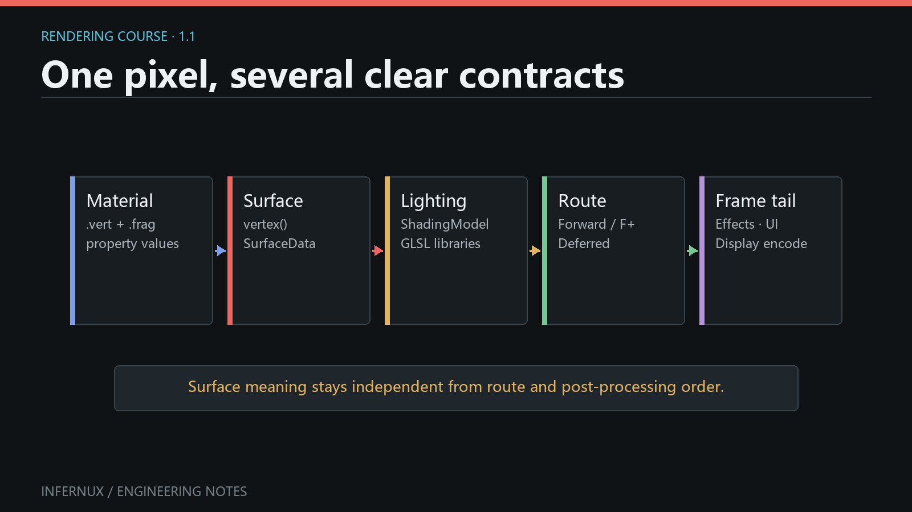

Custom Rendering · Chapter 1
How authored rendering enters an Infernux frame
Infernux splits rendering decisions across Materials, vertex stages, fragment stages, shading models, pipelines, and effects. Each one owns a smaller part of the result.
This course follows the authored rendering path: the files and settings you choose, and the contracts between them. The engine's complete frame graph and chronological GPU pass order sit below that scope. Read it in order the first time; later, each chapter can stand on its own.

The default pipelines and renderer add shadow rendering, depth work, GPU picking, motion-vector variants, and MSAA color/depth resolves around this path when a view or effect needs them. These engine-internal paths sit outside the sequence of authoring stages shown above.
Get one material on screen first
Prerequisites. Open an Infernux project with a writable Assets folder and show the Hierarchy, Project, Inspector, Scene, Game, and Console panels. This exercise uses the built-in Cube mesh, Standard vertex stage, and Lit fragment stage; it needs no imported asset, custom shader, or RenderStack. Use a clean project, or first rename any project shader whose ShaderInfo Name is Standard or Lit: project shaders are scanned before built-ins and the current selector does not label their origin. A newly created scene already contains Main Camera and Directional Light. The camera/light steps below also cover a scene whose Hierarchy was cleared.
Reproduce the complete baseline from an otherwise empty scene:
- Right-click empty space in Hierarchy, choose Create 3D Object > Cube, and leave the Cube Transform at position
(0, 0, 0). Its MeshRenderer should show one mesh and one material slot. - If no enabled Camera exists, right-click Hierarchy and choose Camera. Set its position to
(0, 1, -10)and rotation to(0, 0, 0)so the Cube is inside the Game view. If no enabled light exists, choose Light > Directional Light; the creation command supplies a useful initial rotation. - In Project, open
Assetsor a child folder, right-click empty space, and choose Material (.mat). Name itFirstCube. The current template creates a Material whose Vertex selector isStandardand Fragment selector isUnlit. For this lighting baseline, change Fragment to the built-inLitin its Inspector. - Select the Cube. Under MeshRenderer > Materials, drag
FirstCube.matonto Element 0, or use that slot's asset picker. - Keep the scene free of a RenderStack for this first check. The renderer uses Default Forward when no RenderStack is present.
- Open Scene and Game. Select
FirstCube.matand change Base Color to a saturated color that is easy to distinguish from white.
The baseline passes when the same Cube is visible in both views, its lit faces show different brightness, the chosen Base Color appears on the Cube, and the Material preview changes with it. The Console must contain no new shader import, stage-link, or pipeline error. Scene-visible/Game-missing usually points to the scene Camera; missing in both views points first to the Cube's mesh, enabled MeshRenderer, or Element 0 assignment.
For a second, explicit pipeline check, create Post Processing > RenderStack from the Hierarchy context menu and select Default Forward in its Inspector. With an empty effect list, the Cube should remain visually unchanged. This comparison checks that the explicit baseline is usable; pixels alone do not prove which route produced them.
The workflow above follows hierarchy_creation_service.py and core_context_menus.py for scene/asset creation, project_file_ops.py for the Material template (Standard vertex + Unlit fragment; this chapter switches the fragment to the built-in Lit), the current MeshRenderer and Material Inspectors for assignment, and render_stack_pipeline.py for the no-RenderStack fallback. Later chapters link the public authoring entry points for custom stages, effects, pipelines, and RenderGraph work.
The authored rendering chain
Start with one object in a scene:
- Its Material chooses one
.vertand one.fragby their case-sensitiveShaderInfo Name, then stores the property values declared by those stages. - The vertex stage decides where the mesh vertices end up. If it contains no
vertex()hook, Infernux uses the standard object-to-clip transform. - The fragment stage samples textures and turns the material inputs into
SurfaceData: albedo, normal, metallic, smoothness, emission, alpha, and related surface facts. - The ShadingModel decides how that surface interacts with the current camera's lights. PBR, unlit, toon, and project-specific lighting belong here.
- The RenderPipeline chooses when and how the material is rendered. It can route different Material Render Queue ranges through Forward, Forward+, or Deferred.
- The RenderStack binds reusable
.effectassets to stable effect stages declared by that pipeline. - Camera UI, post-processing, display encoding, and Screen UI form the standard tail before the image reaches the editor viewport or game output.
The useful boundary is between what a surface is and when it is drawn. A toon material stays independent of the scene's Forward+ or mixed-pipeline choice, while the pipeline can route its queue without reimplementing toon lighting.

This capture is visual evidence that the displayed frame existed in that project and session. It does not identify the scene asset, Material or ShadingModel names, active RenderPipeline, RenderStack contents, engine commit, or capture settings. Reproduce architecture claims with the baseline workflow and current source contracts above, not by inferring hidden configuration from the pixels.
Four levels of customization
Use the lowest level that solves the problem:
| You want to change | Authoring level | Typical file |
|---|---|---|
| Mesh position or varyings | Vertex stage | .vert |
| Material inputs and surface appearance | Fragment stage | .frag + .mat |
| How surfaces react to light | Shading model and function libraries | .shadingmodel + .glsl |
| When objects and effects are rendered | Pipeline and effect topology | Python RenderPipeline, .effect, .effectgroup |
Start at the lowest level that actually owns the change. Water may need only vertex deformation and surface construction. A stylized project may add a shading model. A scene with two art directions may route queue ranges differently. Raw RenderGraph work handles the gaps beyond the public pipeline API.
Again, this table maps authoring responsibilities only. A full frame also contains internal renderer paths for shadows, depth products, picking, motion vectors, and MSAA resolves. Those paths reuse compatible Material and vertex contracts. Chapter 8 looks at the lower-level graph behind these branches.
Built-in paths
Infernux ships with three ordinary pipeline choices:
- Default Forward is the default and the easiest baseline to reason about.
- Default Forward+ uses camera-local clustered light selection for scenes with more local lights.
- Default Deferred writes a real GBuffer for compatible opaque materials, performs fullscreen lighting, sends explicitly unsupported shading models through a Forward+ fallback, and always renders transparent objects with Forward+.
Using Standard + Lit in a Deferred pipeline is expected. The material still describes the same surface; the render-path adapter generates the GBuffer side of the contract. A shading model declares Unsupported [Deferred] only when its result falls outside that contract.
A scene without a RenderStack and a scene with an empty Default Forward stack use the same baseline route. Selecting another pipeline changes routing and topology while Material property meanings stay fixed.
Course map
The remaining chapters build the system in dependency order:
- Vertex stages and reusable deformation starts from the visible Cube and its Material.
- Fragment stages,
SurfaceData, and Material properties pairs a fragment stage with the vertex-stage contract. - Pipeline-independent ShadingModels and imported GLSL libraries builds on the fragment chapter's
SurfaceDataoutput. - Reusable RenderEffect assets and fullscreen implementations starts a separate post-processing branch and requires a visible baseline scene.
- RenderStack stages, route scope, and UI boundaries mounts the effect assets from the previous chapter.
- Declarative Python pipelines that mix Forward, Forward+, and Deferred assumes the queue and mount-point vocabulary from Chapters 4-6.
- Low-level RenderGraph is the advanced path for work outside the public pipeline DSL.
At the end, you will be able to create a pipeline where one opaque queue range uses stylized Forward shading, another uses Deferred PBR, each route receives different effects, both are composited under one sky, and final post-processing still treats Camera UI and Screen UI deliberately.